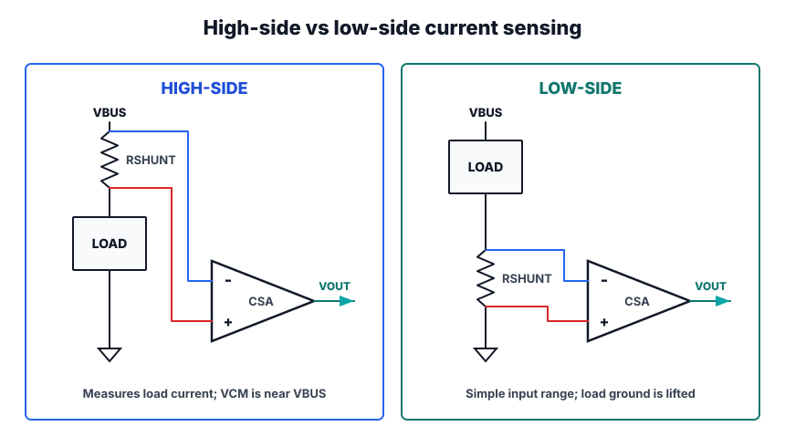
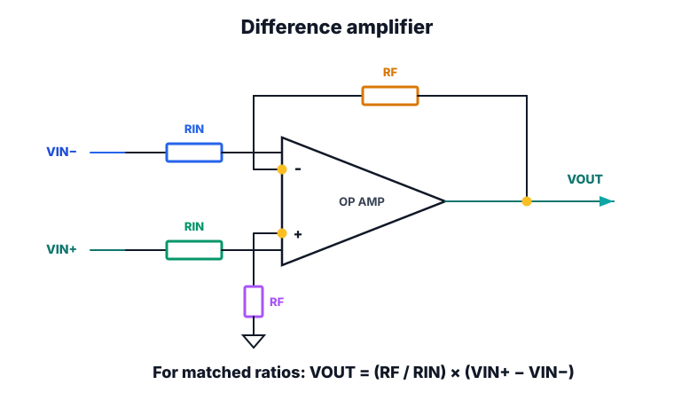
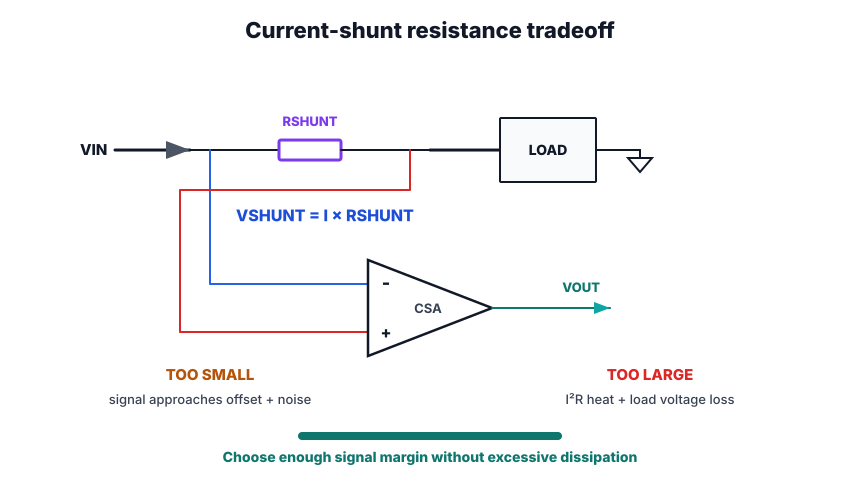
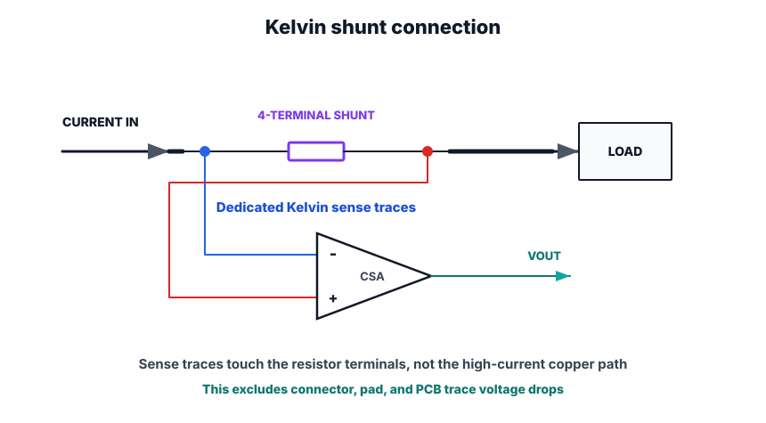
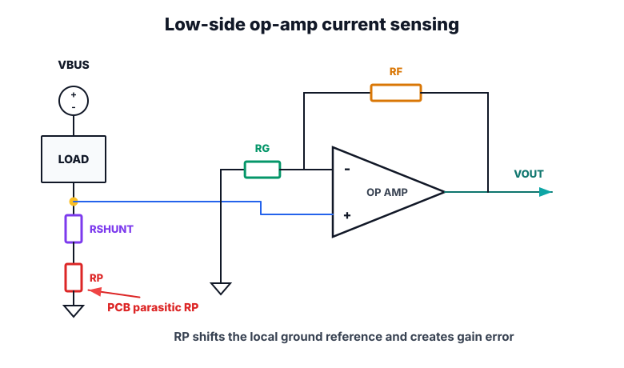
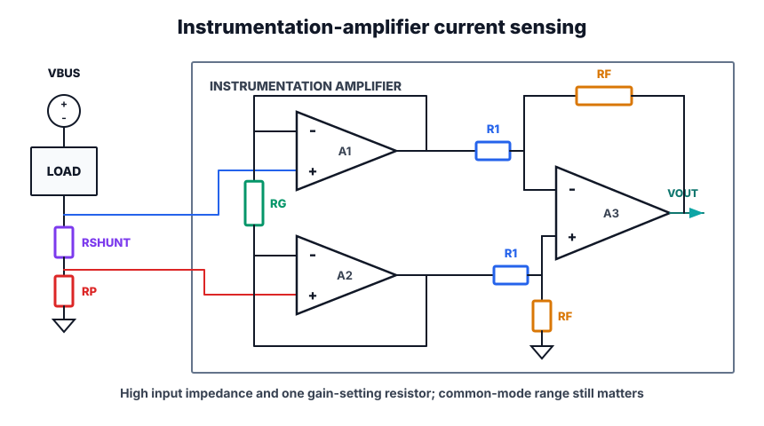
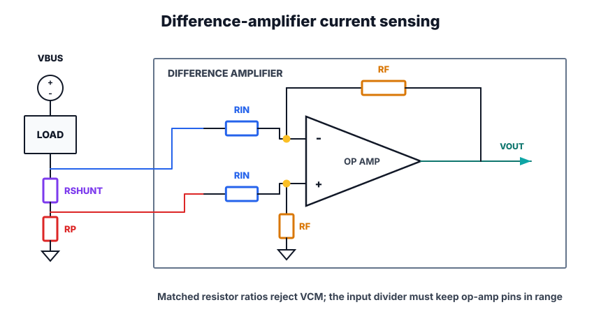
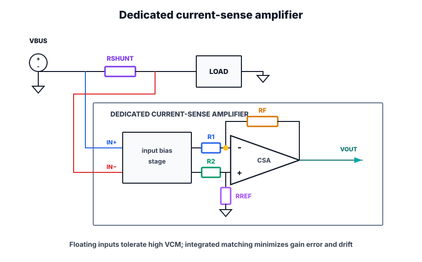

current-sensing-fundamentals-what-is-the-difference-between-high-side / image_1
High-side vs low-side current sensing current_sense_high_low

Prompt
Side-by-side schematics. Left (High-Side): V_in connects to a Shunt Resistor, which connects to the Load, which connects to Ground. The amplifier measures across the shunt. Right (Low-Side): V_in connects to the Load, which connects to a Shunt Resistor, which connects to Ground. The amplifier measures across the shunt.
current-sensing-op-amps-when-measuring-a-high-side-shunt-why-is-a-diff / image_1
Difference amplifier current_difference_equation

Prompt
Schematic of an Op-Amp Difference Amplifier. V_in- connects through R_in to the inverting (-) terminal, with R_f connecting the (-) terminal to V_out. V_in+ connects through R_in to the non-inverting (+) terminal, with another resistor R_f connecting the (+) terminal to ground.
current-sensing-thinking-draw-a-high-side-current-sensing-circuit-why / image_1
Current-shunt resistance tradeoff current_shunt_tradeoff

Prompt
A high-side current sensing schematic. A power supply connects to a variable Shunt Resistor, passing through to a Load. An Op-Amp measures the voltage across the shunt. Two text callouts point to the shunt: 'If R is too big -> Heat & V_drop' and 'If R is too small -> Lost in Op-Amp V_os'.
current-sensing-pcb-design-when-routing-a-pcb-for-a-shunt-resistor-why / image_1
Kelvin shunt connection kelvin_shunt

Prompt
PCB layout diagram. A rectangular shunt resistor has thick, wide copper traces carrying high current connected to its outer edges. Two very thin copper traces tap directly into the inner, center edges of the resistor pads and route away parallel to each other as a differential pair toward the amplifier.
current-sensing-amplifier-topologies-draw-a-standard-operational-ampli / image_1
Low-side op-amp current sensing low_side_opamp_current

Prompt
Schematic of an Operational Amplifier for current sensing. V_bus connects to a System Load, which goes to R_shunt, then through a parasitic resistance (R_p) to Ground. The op-amp non-inverting (+) input taps above R_shunt. The inverting (-) input connects to a voltage divider (R_f from output, R_g to ground). Text points to R_p stating 'Parasitic impedance to GND introduces error'.
current-sensing-amplifier-topologies-draw-an-instrumentation-amplifier / image_1
Instrumentation-amplifier current sensing instrumentation_amp_current

Prompt
Schematic of an Instrumentation Amplifier. V_bus connects to System Load, then R_shunt, then R_p, then Ground. The IN- and IN+ pins cross over to measure exactly across R_shunt (labeled 'Solves PCB parasitic issue'). Inside the IA block, two input buffers connect via a shared R_g, feeding into a final difference amplifier stage.
current-sensing-amplifier-topologies-draw-a-difference-amplifier-da-co / image_1
Difference-amplifier current sensing difference_amp_current

Prompt
Schematic of a Difference Amplifier. V_bus connects to System Load, then R_shunt, then R_p, then Ground. The IN- and IN+ pins cross over to measure exactly across R_shunt. Inside the DA block, internal series resistors connect to the internal op-amp, acting as a divider. It successfully handles V_CM > V_s.
current-sensing-amplifier-topologies-draw-a-dedicated-current-sense-am / image_1
Dedicated current-sense amplifier current_sense_amp

Prompt
Schematic of a Current Sense Amplifier. Used for High-Side sensing: V_bus -> R_shunt -> System Load -> Ground. The IN- and IN+ pins measure across R_shunt (V_CM = V_bus, and V_CM > V_s). Inside the CSA block, the pins enter a specialized 'Input Bias Stage', which then feeds a difference amplifier with precision integrated resistors.